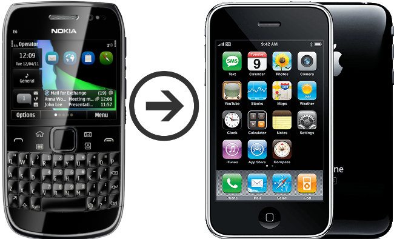
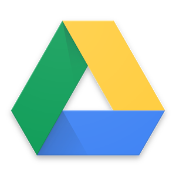
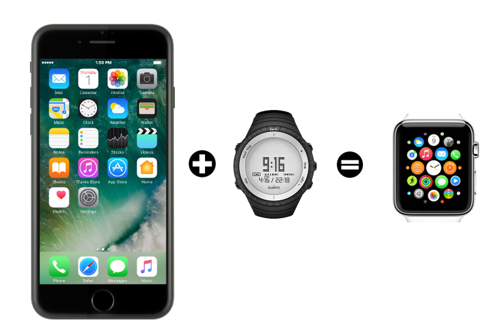
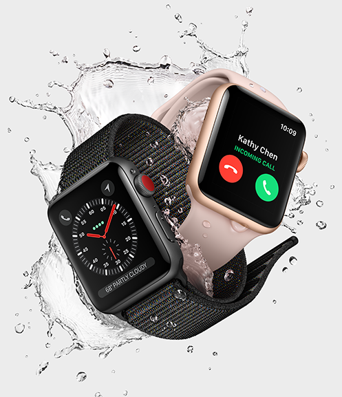
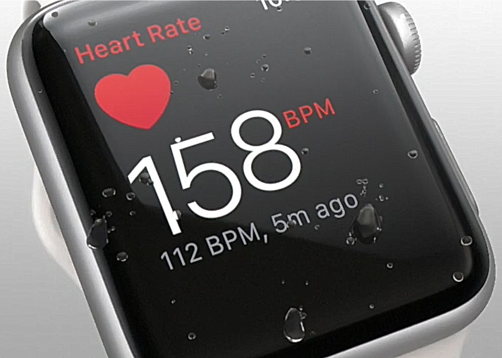
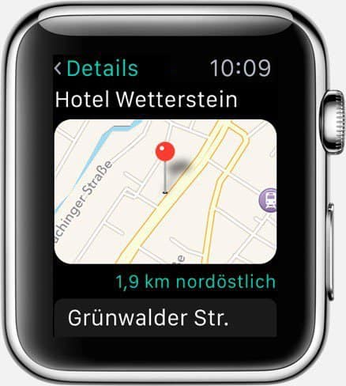
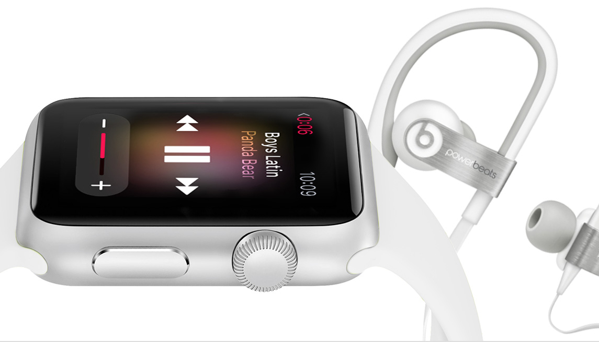

A Invasão dos Equipamentos Smart
De Relógios à Cidades Inteligentes
Apps em todo lugar
A reinvenção do celular
O padrão atual foi popularizado pela Apple (2007).

Smartphones
Smartphones
Apps tornaram nossa vida mais fácil e divertida.
Passaram a ser parte natural do nosso cotidiano. Querem ver?





Smart Devices
Conectados
Programáveis
Personalizáveis
Operados por toque, voz, vídeo, …
Sensores que interagem com o ambiente
Autônomos
Smart Devices
Smartphones são os mais populares
Apenas o início de uma grande revolução tecnológica.
Wearables
Smart Watches
O ponto de partida





Fitness Trackers
Fitness Tracker & Sleep Trackers
Não poderiam diminuir mais?
O tapete de dança você já conhecia
Nike+ Trainning
A Nike levou isso a sério.
Smart T-Shirt
Smart Jacket
Smart Jacket
Black Mirror
Uma realidade distante…
… mas nem tanto
Google Glass já é realidade
Outros Devices
Chaveiros / Pingentes Rastreadores
Lego
Drones
Smart Homes
Lâmpadas
Portões
Ar condicionado
Fechaduras
Porteiro Eletrônico Inteligente
Balança Inteligente
Smart Cities
Eficiente: custos e recursos
Ecológica e Sustentável
Resolver problemas das cidades atuais
Smart Buildings
Transportes públicos
Purificação do ar
Engenharia de tráfego
Informação de vagas de estacionamento
Smart Cities
Smart Cities
Iluminação e Câmeras
Smart Cities
Fornecimento de Água, Energia e Gás
Manutenção
Smart Cities
Transportes e Tráfego
Smart Cities
Transportes e Tráfego
Smart Cities
Transportes e Tráfego
Smart Cars
Park Assistance você já viu
E um telão que te ajuda a estacionar?
Que tal ir embora e deixar o carro se virar?
Bom mesmo é deixar o carro dirigir
EBS
O fim dos semáforos?
Pra finalizar
Tecnologia veio para ficar
Toda essa inovação é só o início
Programação de computadores é e se tornará ainda mais essencial
Pra finalizar
Profissionais de informática podem tirar vantagem para empreender
Desenvolver tecnologia não é coisa de outro mundo
Grandes empresas como Apple e Google proveem muitas ferramentas
Esses exemplos mostram que criar tecnologia pode ser algo desafiador e divertido